PROFINET Device4.1.0 |
 |

|
PROFINET Device4.1.0 |
|
|
This chapter describes the functionality of the implemented application as an example demonstrating how the Data-Exchange between PLC and EVM board works. For this purpose an I/O-Submodule / Telegram with I/O 4-Byte input and output data is used. It is pllugged in Slot-1, Subslot-2. The application on EVM board just copies the Output-Data into the Input-Data and transfer it to the PLC. On PLC side a counter value should be transfered cyclically by Output-Data.
Following figure shows the tag table of PLC in TIA portal:
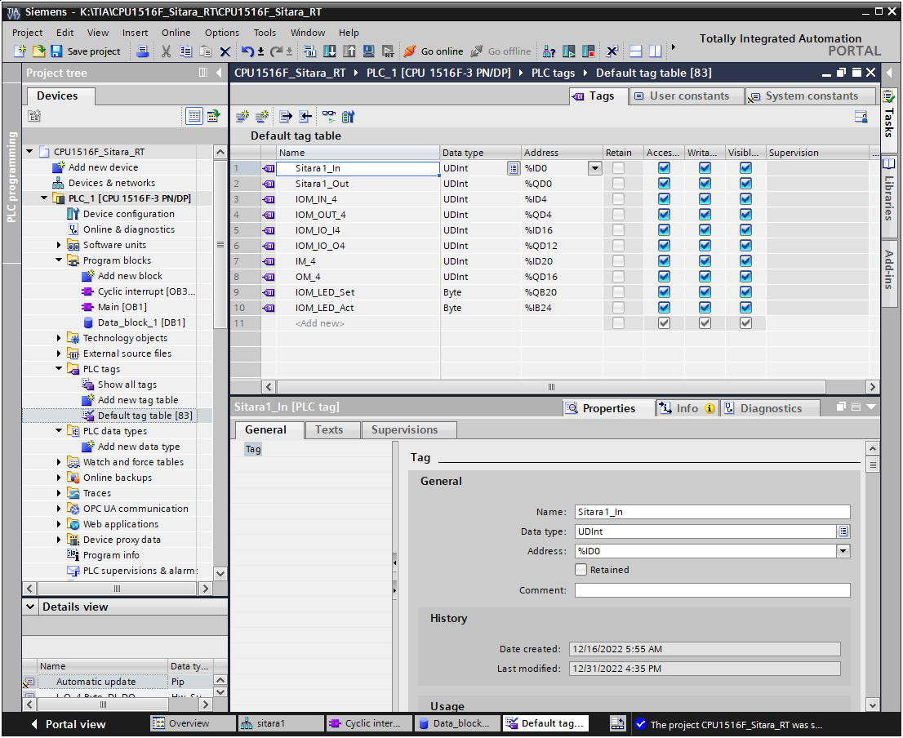
Following figure shows the additional Data-Block of PLC in TIA portal, this is inteded to synchronize/manage updating cyclically counter value according to PLC-Send-Clock and IO-Device cycle time:
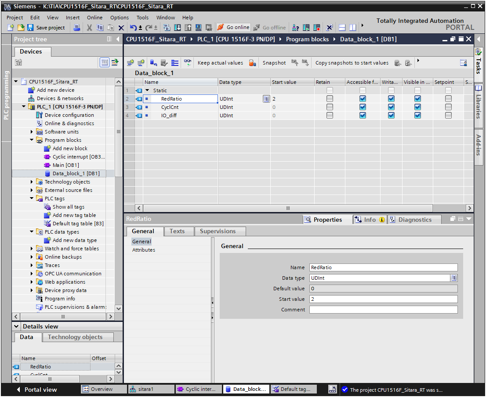
Following figure shows the configuration of PLC Send-Clock (in this example 1 millisecond):
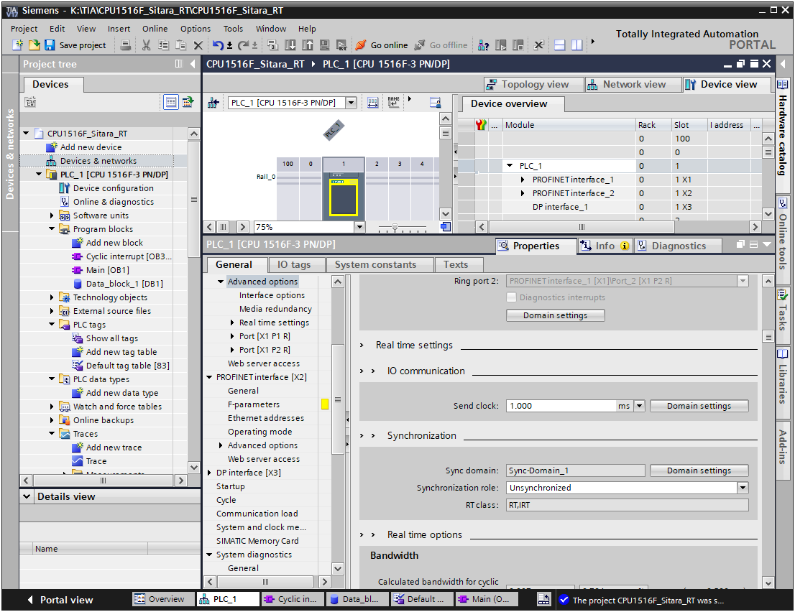
Following figure shows the configuration of IO-Device Cycle time (in this example 2 millisecond):
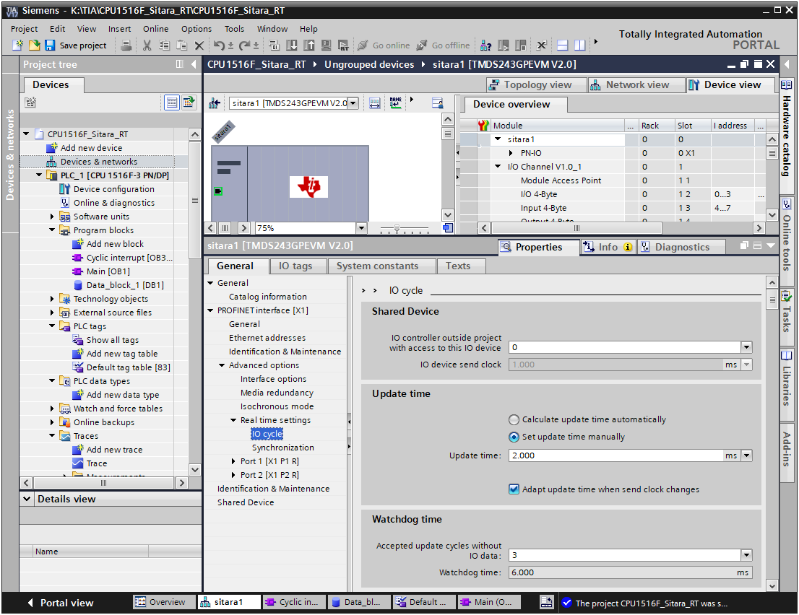
OB30 Cyclically Interrupt block used to control the counter value.
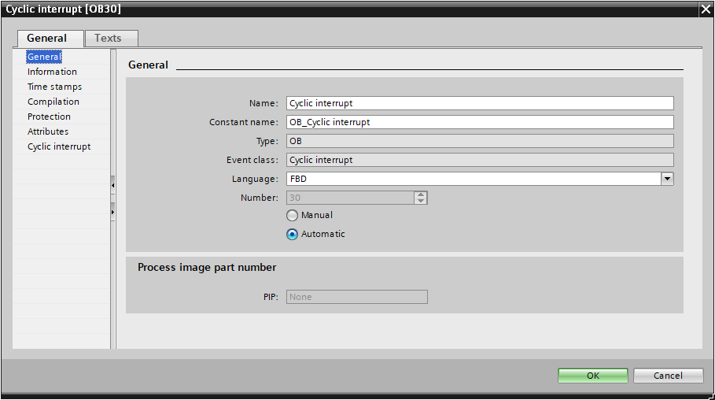
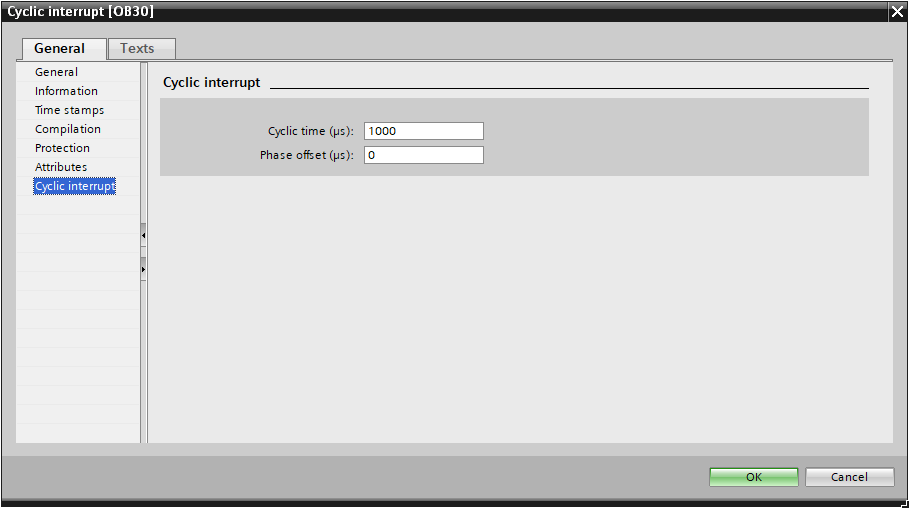
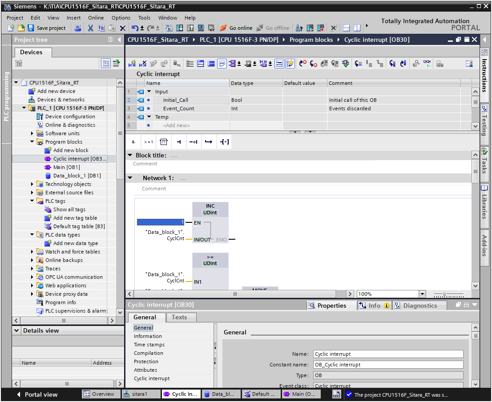
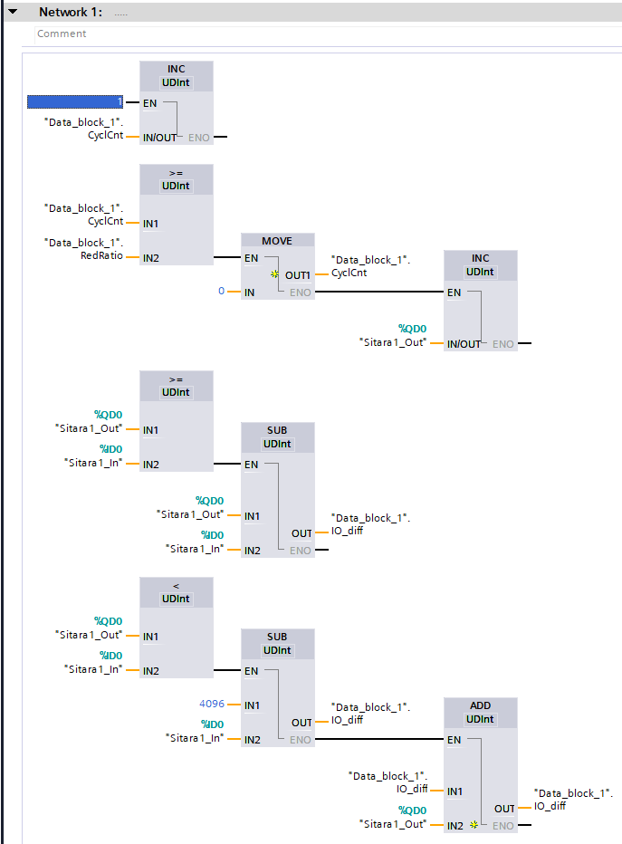
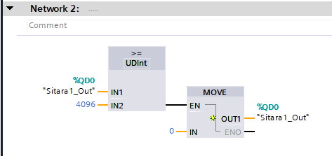
Follwoing figure shows the signal definitions in TIA portal Trace:
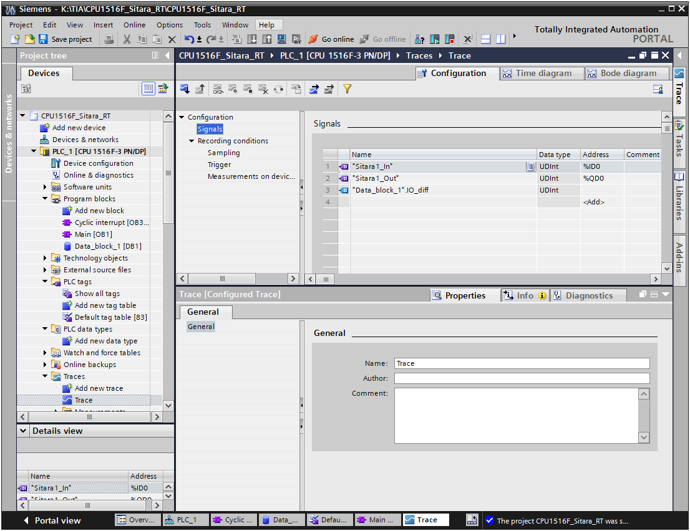
Follwoing figure shows the Trace Time diagram with captured curve of Input and Output Data:
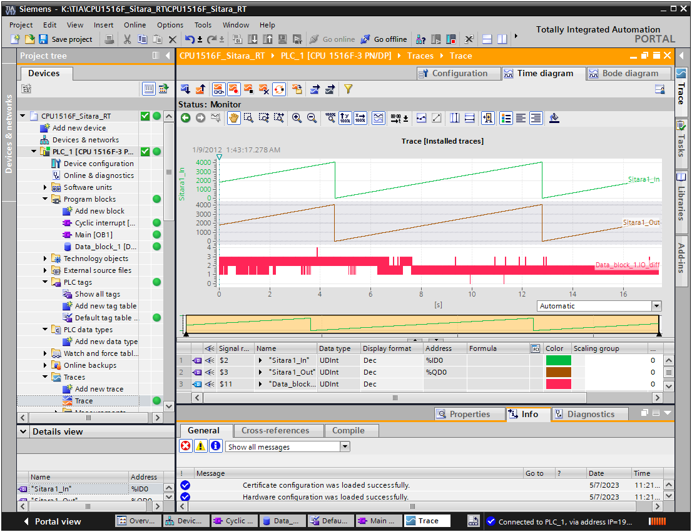
Follwoing figure shows the LED-Control in watch_table:
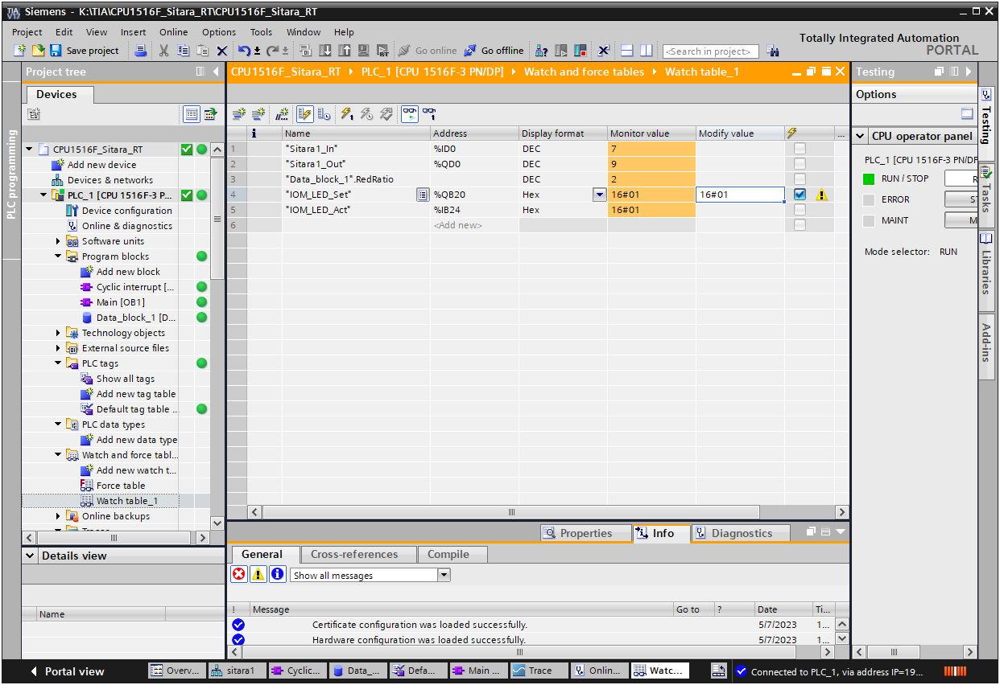
 1.9.8
1.9.8